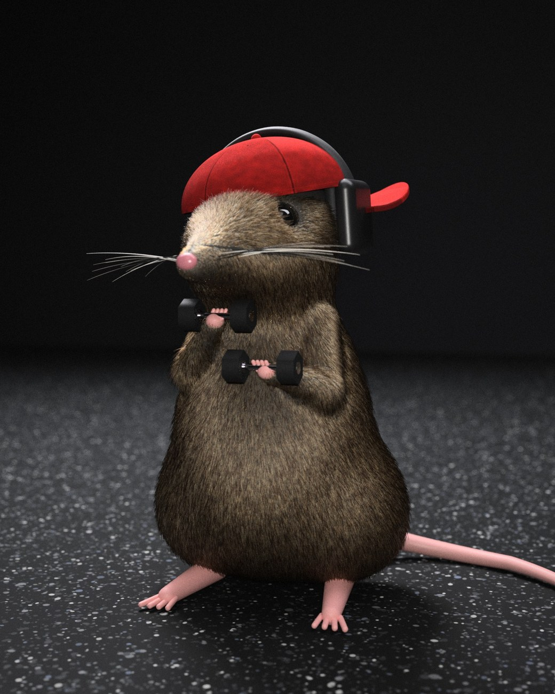
about ten.
lift like
nobody’s counting.
The brand key for about ten. Everyone has rep amnesia. The box doesn’t.
how to use this document
This document is about ten.’s strategic compass.
It says who we are, why we exist, how we act and whom we serve.
It is the base for all communication, design, content and the product itself.
Use it when you are:
- writing or designing anything with the about ten. name on it,
- deciding whether something fits the brand, or a joke crosses a line,
- briefing a team, an agency, a gym or a partner.
The brand key is not a rulebook.
It is a working frame that helps the brand grow without losing itself.
This key belongs to the third direction for the same box, the funny one. Version 1, 21 November 2026. Numbers in pictures are samples until the pilot runs. Harry is a render.
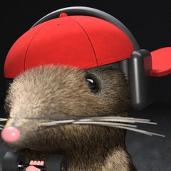
harry’s noteread it twice. you’ll still forget half. that’s why there’s a box.
root strength | it started at rep six
about ten.
about ten. started on a gym floor in Brno. Watch any machine for an hour and you see the same thing: someone mouths the numbers, loses them around six, finishes the set anyway and shrugs. Ask what they did last week: “uh.” Nobody is lazy. They are busy lifting.
We call it rep amnesia. Everyone has it.
about ten. answers one question:
“wait, how many was that?”
Its roots are three principles:
The box counts. You lift.Every joke is true.Nothing to remember.
how many was that?
the box: 9.
brand purpose | someone had to count
about ten.’s purpose
We end rep amnesia. We take the counting and the remembering off people’s hands, so the gym is just lifting again.
We do the maths.
You do the lifting.
You do the lifting.
Everyone in a gym is doing maths: reps, rest, last week’s weight, the week before. It slips around six, and the guess becomes “about ten”. Then next week starts from a guess. That’s rep amnesia.
about ten. takes all of it. The box on the machine counts every rep and remembers them, the app says what to beat, and Harry says it with a straight face.
For the member, nothing to remember. For the gym, a floor people talk about.

competitive environment | everyone else, counting badly
Where about ten. stands
People already deal with rep amnesia. Every way costs them something: accuracy, typing, money or a wrist.
- Your head – free, always there, gives up around six. Source of the name.
- A notebook or the notes app – remembers what you type between sets.
- Logging apps – they work while you type every set. Most people stop typing.
- A watch or a ring – counts steps and heartbeats well. Reps on a machine, it guesses.
- A trainer – counts perfectly, for an hour, and is booked for the next three weeks.
about ten. is the workout log that writes itself.
What each option asks of you
Counts for youRemembers last timeNothing to type or wearNever rounds up
Your head
Notebooks and logging apps
A watch or a ring
A trainer
about ten.Testing
Our reading, November 2026. The box’s counting is being checked by hand on test machines. The results go public, misses included.
target audience | you. you forgot.
about ten. is for
Two people meet at the machine: the member who lifts and would never log a set, and the gym that pays for the box.
- People who lift on machines a few times a week and have never typed a set into anything. Most of any gym floor.
- Rep amnesiacs, so everyone: lost count at six this week, can’t say what they did last Tuesday.
- Young, and at home in gym memes. “Gym rat” is a word they use about themselves.
- Independent gyms with a young floor that want to be the gym people talk about.
For people who’d never log a set.
Not yet: data lovers who want every chart, free-weight purists (the box sits on weight-stack machines), and gyms that want a serious tone.
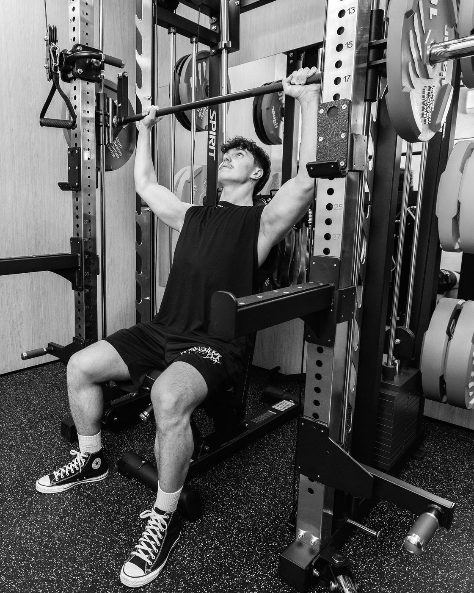
consumer insight | rep amnesia
The insight
People who lift want the gains, not the bookkeeping. Counting is maths during exercise, so it slips around rep six. Last week is a blur. Logging fixes both, but nobody wants to type between sets. So most people guess, and the guess rounds up.
We call it rep amnesia. Nobody chooses it. Everyone has it:
- Losing count – somewhere around six.
- Forgetting last time – “what did I do last week?” “uh.”
- Rounding up – seven becomes “about ten”.
- Missing the progress – the mirror says nothing changed. The numbers would say otherwise.
Rep amnesia
seven? eight? eh. about ten.
benefits | what you get (besides a rat)
What about ten. brings
For the member: what it does
- Counts by itself – every rep, set and rest, from the weight stack.
- Remembers – last time, next to every set, machine by machine.
- Says when to go up – the next weight, when your sets say so.
- Writes the log – every workout kept, nothing typed.
- Free – the gym pays.
For the member: how it feels
- Light – no more rep amnesia, nothing to remember.
- Sure – you know what to beat, without thinking.
- Honest – it was 7. That’s fine.
- Funny – a line worth sending to the group chat.
For the gym
- A floor people talk about – Harry, the GIFs, the lines members send their friends.
- Members who asked for it – ten from one gym, then we call the owner.
- A reason to come back – members know what to beat next time.
- The floor, measured – busy hours and the machines that earn their space.
brand values | three rules harry made up
about ten.’s values
easy
Nothing to remember.
The box counts, remembers and does the maths. Anything that gives people homework (typing, streaks, nagging) is not us.
true
It was 7.
Every joke is a real gym moment, then the real number. We never round up, our own misses included.
kind
Laugh with, never at.
The joke is on the moment, never the person. Nothing about bodies, weight, beginners or anyone’s first day.
harry’s notei made these up. they’re good. the third one is for you.
brand belief | hills we’ll lift on
about ten. believes that…
- Your memory is a liar. A nice one, but a liar.
- Lifting should take muscle, not memory.
- Rep amnesia isn’t a character flaw. The gym just never had a memory.
- A number you can laugh at is a number you’ll look at.
- The gym doesn’t need more beast mode. It needs a memory, and a sense of humour.
We believe lifting should take muscle, not memory.
brand personality | if it were a person (it’s a rat)
about ten. as a person
Archetype: the Jester, the dry kind
The Jester wants life to feel light. about ten. is the regular who has seen everything at this gym and remembers all of it: the rest that turned into an album, the set that “felt like ten” and was five. It never shouts and it never does beast mode. It is also, honestly, a bit strange: a rat in a cap runs the counting, and nobody here finds that odd.
Its strength is a straight face: the joke, then the real number. Next to it, people relax.
harry. head of counting.
never lost count.
brand personality | if it were a person (it’s a rat)
Brands with this archetype come across as:
- Funny. Dry, one line, never a costume.
- Light. Nothing heavy, nothing to do.
- Honest. The joke is true, and so is the number.
- Warm. It laughs with you, never at you.
- Strange. A rat runs the counting. We never explain it.
Typical traits of the Jester:
GoalThe gym feels light again.
StrategyTell the truth, then make it funny.
GiftRelief, and a laugh.
Watch out forTrying too hard. One dry true line beats a gag.
harry. head of counting.
never lost count.
tone of voice | lowercase, mostly
How about ten. talks
about ten.’s tone is:
Lowercase – like a text from a friend. The name too.Short – about four words a headline.Dry – one line, a straight face.True – the joke, then the real number.Kind – it laughs at the moment, never at you.Strange – a rat runs the counting. we never explain it.
What about ten. says
- “you lost count at six. the box didn’t.”
- “everyone has rep amnesia. the box doesn’t.”
- “this set is being recorded for training purposes.”
- “we all round up. the box doesn’t.”
- “u said about ten. it was 7.”
- “forget about it. the box won’t.”
What about ten. never says
- “crush your sets with smart tracking!”
- “no excuses, no limits.”
- “beast mode: on.”
- “summer body loading…”
- “you broke your streak.”
- “guaranteed results.”
reasons to believe | the receipts
Why believe about ten.
01
It counts by itself
The box sits on the weight stack. One rise and fall is one rep, and the rest clock starts when the stack lands.
02
No rep amnesia
It remembers. Last time sits next to every set, machine by machine, with the next weight when your sets say so.
03
Checked by hand
Every set on the test machines is filmed and counted by two people. Misses are kept and published.
04
One tap, then the pocket
Tap your phone on the tag once. Nothing to type, nothing to wear.
05
Free for members
The gym pays. A member never sees a price.
06
Your sets are yours
The gym sees totals, never one member’s sets. Harry is a rat, but he only rats to you.
discriminator | why not just a notebook
the workout log that writes itself.
Notebooks and apps keep what you type. Watches guess. about ten. sits on the machine, counts every rep by itself and remembers all of them.
Nothing to type. Nothing to wear. Nothing to remember.
Rep amnesia, as we use the word: losing count mid-set and forgetting what you did last time. Everyone has it. Harry doesn’t.
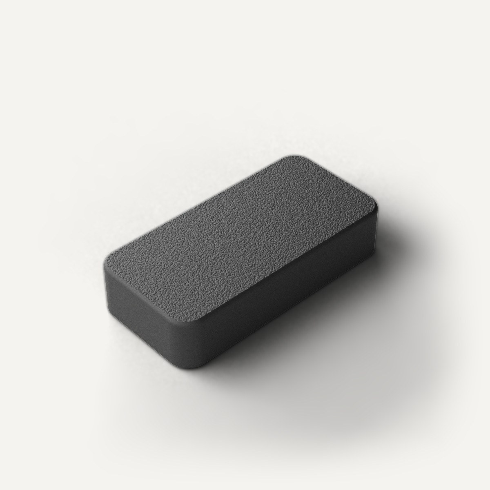
brand essence | short enough to remember
forget about it.
Everyone has rep amnesia. The box doesn’t, so you don’t have to remember a thing.
brand key model | all of it, before you forget
Purpose, values and belief
We end rep amnesia: we do the maths, you do the lifting. Easy, true, kind. Lifting should take muscle, not memory.
Personality and tone
The Jester, the dry kind: funny, light, honest, warm. Lowercase, short, the joke then the real number.
Benefits
Counts, remembers, writes the log, free. Light, sure, honest, funny. A floor people talk about.
Competitive environment
Your head, notebooks and apps you type into, watches that guess, trainers who are booked.
Reasons to believe
Counts by itself. Remembers. Checked by hand. One tap. Free for members. Your sets are yours.
Discriminator
The workout log that writes itself.
Consumer insight
Rep amnesia. “seven? eight? eh. about ten.”
Target audience
People who’d never log a set, and the gyms they lift at.
Root strength
Born on a gym floor in Brno, watching people lose count. We call it rep amnesia. The box counts, you lift.
visual identity
How about ten. looks
lift like
nobody’s counting.
logo and symbol
about ten.Logo
10.Symbol
harry’s notei asked for my face on the logo. they said no. fair.
colour versions
about ten.
10.
about ten.
10.
about ten.
10.
On whiteBlack. The main version, for pages, e-mails and print. The symbol stays red.
On redWhite, on the red panels and the gradient. The symbol turns white with a red 10. Never black on red.
On blackWhite, on dark pages and the gym screen. The symbol stays red.
black and white
about ten.
10.
about ten.
10.
Black on whiteOne ink. The logo has no tints, so it prints, stamps and embroiders as it is. The 10. is cut out of the square.
White on blackThe same, reversed, for dark grounds and one-colour print on black.
the logo on a background
about ten.
about ten.
about ten.
about ten.
about ten.
about ten.
about ten.
about ten.
about ten.
clear space and minimum size
Clear space
about ten.
Keep free space around the logo equal to x, the height of a lowercase x, on every side. Around the symbol, a quarter of its width.
Minimum size
about ten.80 px, 20 mm wide
10.20 px, 6 mm
Below these sizes the thin strokes of the italic break up. Use the symbol instead of the logo below 80 px.
misuse | please don’t
about ten.
About Ten.
about ten
about ten.
about ten.
about ten.
colour palette
Black and white are the gym in a flash photo. Red is the record: what the box counted, and the button to get counted.
u said about ten.
it was 7.
BlackPrimary. Text, the said strip, dark pages.
HEX #0A0A0A
RGB 10, 10, 10
CMYK 0, 0, 0, 96
WhitePrimary. Pages, words on red and on photos.
HEX #FFFFFF
RGB 255, 255, 255
CMYK 0, 0, 0, 0
PaperSecondary. Calm pages and cards, the box’s light page.
HEX #F4F3F0
RGB 244, 243, 240
CMYK 0, 0, 2, 4
Red gradientThe big panels only, white words on it.
HEX #C21A1B
to #8C0D10
to #350405
RedAccent. What the box counted, every main button, Harry’s cap, the red panels.
Soft #45423F, secondary textLine #E3E1DC, dividers and empty strokes
HEX #D7201B
RGB 215, 32, 27
CMYK 0, 85, 87, 16
where red goes | only where it counts
felt like ten.
the box: 5.
get countedsee the box
Every main buttonget counted, tap in. The second button is outlined.you lost count at six.
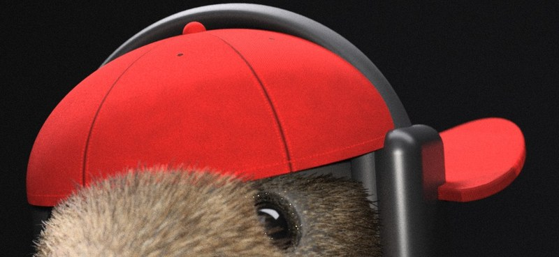
The counted barIn charts, the bar the box just counted. The rest stay grey.
todaytrendsplansyou
The ring and the active tabIn the app: the workout ring, and the tab you are on.Red means counted. It marks what the box counted and the button to get counted, and nothing else. Big words on red are white. Never red words on a photo outside a strip.
colour combinations
about ten.
Aa
you lost count at six. the box didn’t.
get countedsee the box
about ten.
Aa
you lost count at six. the box didn’t.
get countedsee the box
about ten.
Aa
you lost count at six. the box didn’t.
get countedsee the box
about ten.
Aa
you lost count at six. the box didn’t.
get countedsee the box
typography
Instrument Serif
Aa
Aa Bb Cc Dd Ee Ff Gg Hh Ii Jj Kk Ll Mm
Nn Oo Pp Qq Rr Ss Tt Uu Vv Ww Xx Yy Zz
0 1 2 3 4 5 6 7 8 9
Display, lowercase
you lost count at six.
Instrument SerifThe name
about ten.
Instrument Serif italicText
A box on the machine counts every rep.
Instrument SansStrips
the box: 9.
text hierarchy
DisplayInstrument Serif, lowercase, line height 0.93
The nameInstrument Serif italic, −1 %
Section titlesInstrument Serif, lowercase
HeadingsInstrument Sans SemiBold
Body textInstrument Sans Regular
LabelsInstrument Sans SemiBold, capitals, +6 %
StripsArial Bold, lowercase, on black or red
ButtonsInstrument Sans SemiBold, in a pill
you lost count at six.
what it counts
Leg press, 85 kg
Each rep is one rise and fall of the stack. The last ones get slower, and the box sees that too.
Sample numbers
10. easy.
the box: 6.
iconography
The set
Sizes and states
16 px
24 px
32 px
Default
Active
On black
todaytrendsplansyouThe tab bar
The app’s own line icons on a 24 px grid, 1.8 px strokes, round ends, one colour. Red only for the active tab.
interface elements
Buttons
get countedMain action
see the boxSecond action
tap inOn red
Tags
CountedNew bestSample
The ring
95, workout done.
The strips
u said about ten.
it was 7.
Tabs
todaytrendsplansyou
Words on a photo
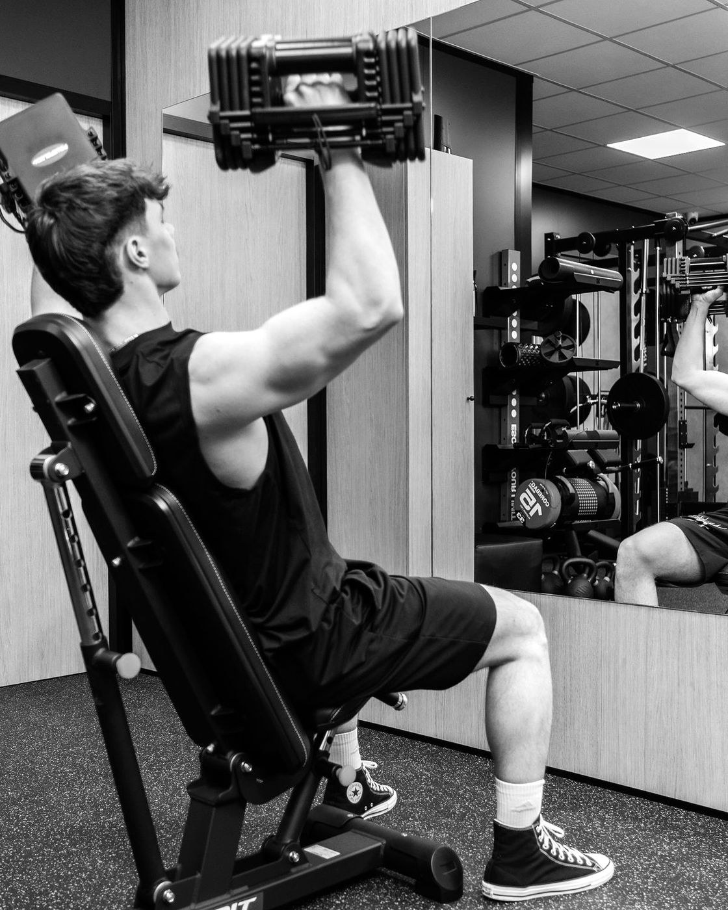
10. easy.
the box: 6.
On photos, words go in strips at the bottom, centred, like subtitles. Black for what was said, red for what was counted.
photography | caught, not posed
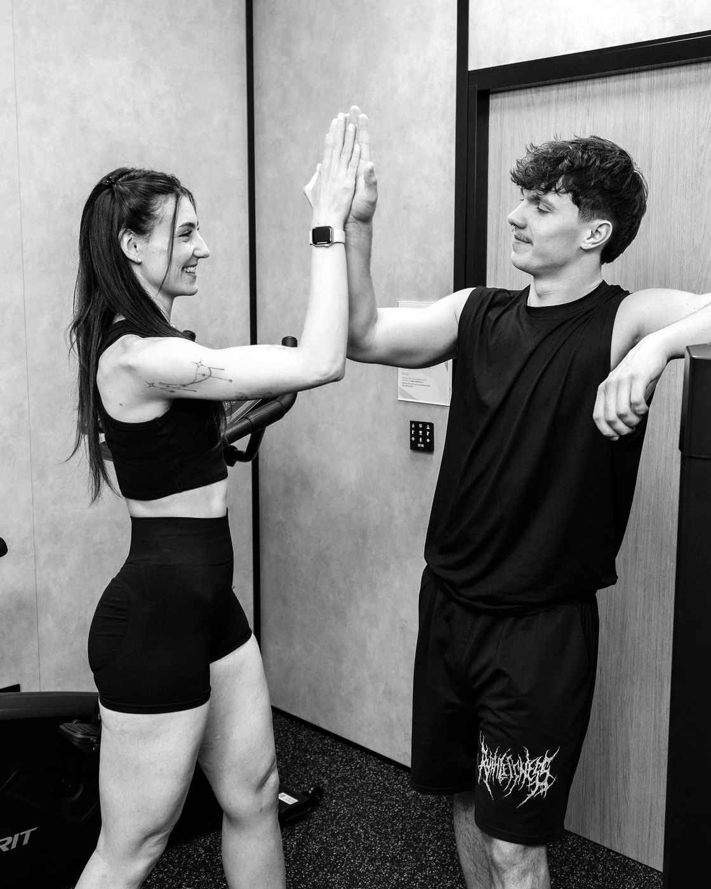
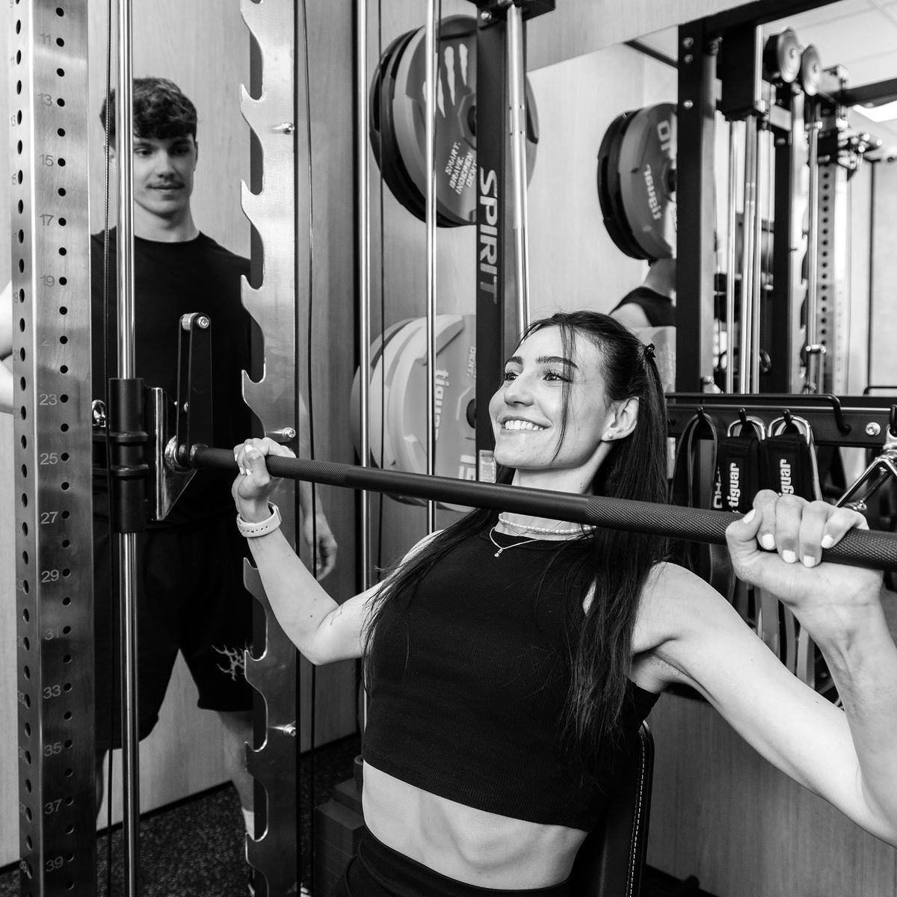
- Black and white, flash, real. Our own shoot, never stock, never made by AI.
- Caught, not posed. Mid-set and between sets, the moments people lose count.
- Whole heads, no signs. No sign or slogan in frame. The strips carry the words.
graphic elements | the strips
10. easy.
the box: 6.
felt like ten.
the box: 5.
rest: 2:00. one more song.
the box: 11:06.
u said about ten.
it was 7.
Black is rep amnesia: what you said or felt. Red is what the box counted. Every joke in about ten. is these two lines: a real gym moment, then the real number.
- Arial Bold, lowercase, white, the strip as tight as the words.
- The said line first, the counted line under it. A dry comment may follow, in black.
- On photos and GIFs, at the bottom and centred, like subtitles.
graphic elements | the gif
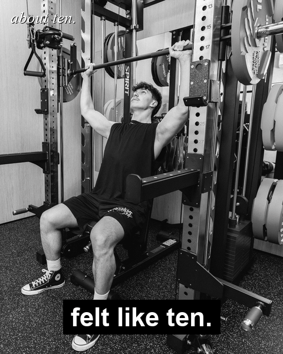

Black and white, four or five frames, about two seconds each, 4:5. The name small at the top left, the strips at the bottom. One GIF, one moment: the guess, then the count.
The low frame rate is rep amnesia: how a set feels in your head, jumpy and half remembered. The strip is what really happened.
graphic elements | the running jokes
do you suffer from rep amnesia?
☐ you lose count around six
☐ every set is “about ten”
side effects may include: knowing what you lifted last week.
this set is being recorded
for training purposes.
every plane has a black box.
now your leg day does too.
lost
my count.
last seen: rep six.
if found, it was 7.
harry’s notei was under the bench. i counted. you said twelve.
we all round up.
the box doesn’t.
Strange is fine. Mean is not. Every running joke ends in a real number or a real feature, and none of them is about a body, a weight, a beginner or another gym.
graphic elements | the box on its page
The box is rendered for the colour it sits on. Lit and shot for that page, it keeps its own shadow and edges.
- Paper, made for #F4F3F0.
- Red, made for the red panels.
- Black: the gym floor, for dark pages.
- Never a cut-out pasted on another colour.
Paper
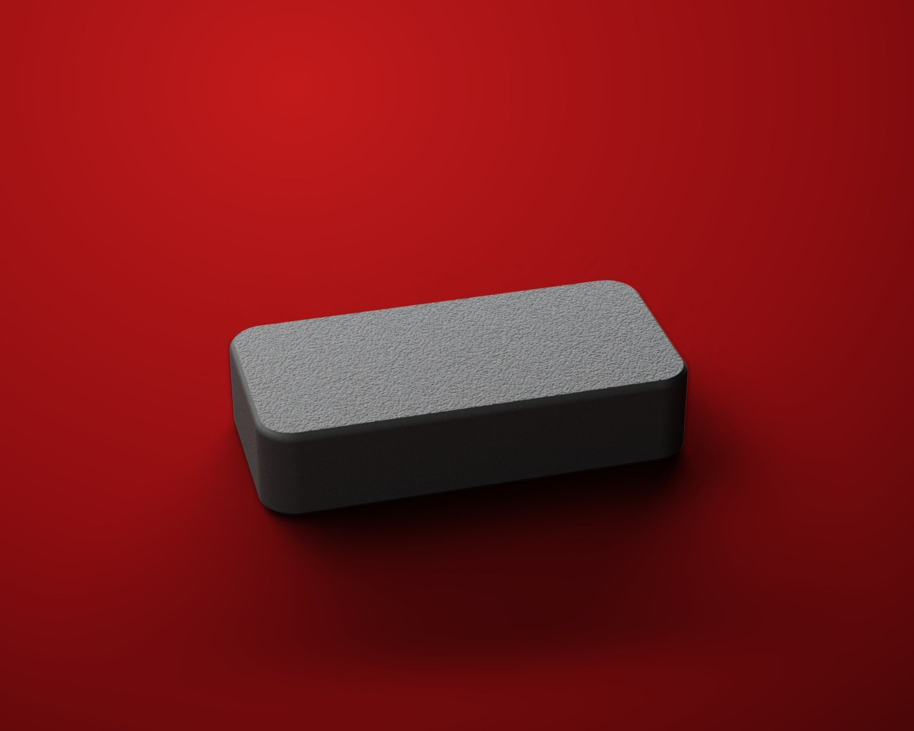
Red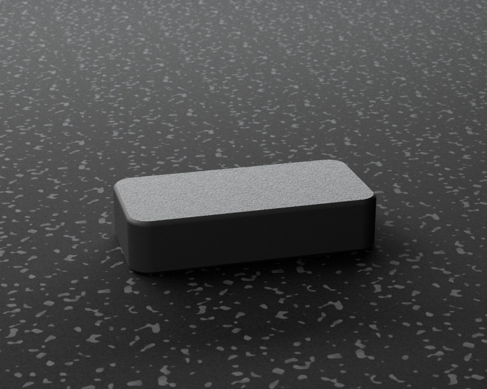
Blackharry’s noteit’s a prototype. it never forgets. that’s the whole job.
harry | the rules (he wrote them)
harry. the original gym rat. head of counting.
He has watched a million people lose count at six. He never has: the only gym rat without rep amnesia.
- A real-looking rat, never a drawing. Rendered with real hairs, a red six-panel cap worn back to the side, black headphones and two small hex dumbbells.
- Shot like a flash snapshot on a dark gym floor, never on a clean studio sweep.
- He writes, he doesn’t talk. Lowercase, short, signed harry. No speech bubbles.
- Never on red (his cap is the red), never the logo, never in a costume.
- The mascot test: take him away and every page still works.
harry | three shots
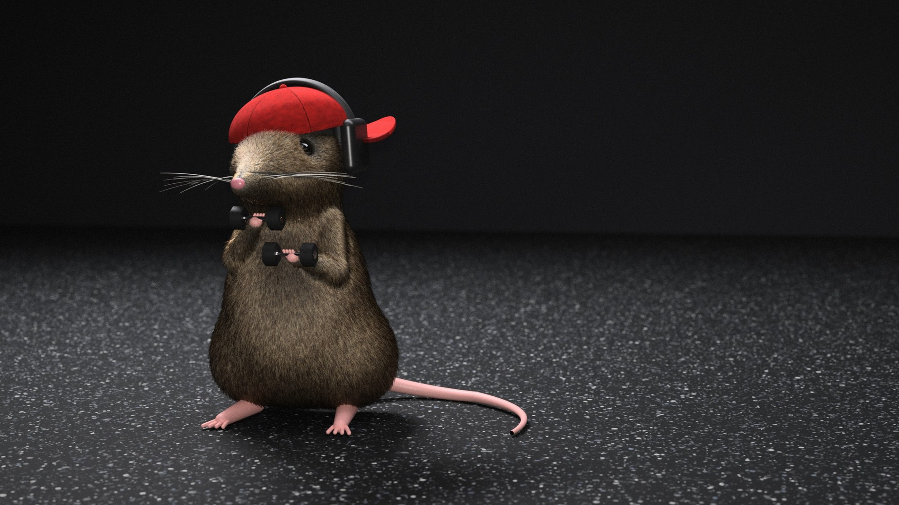
visualisation
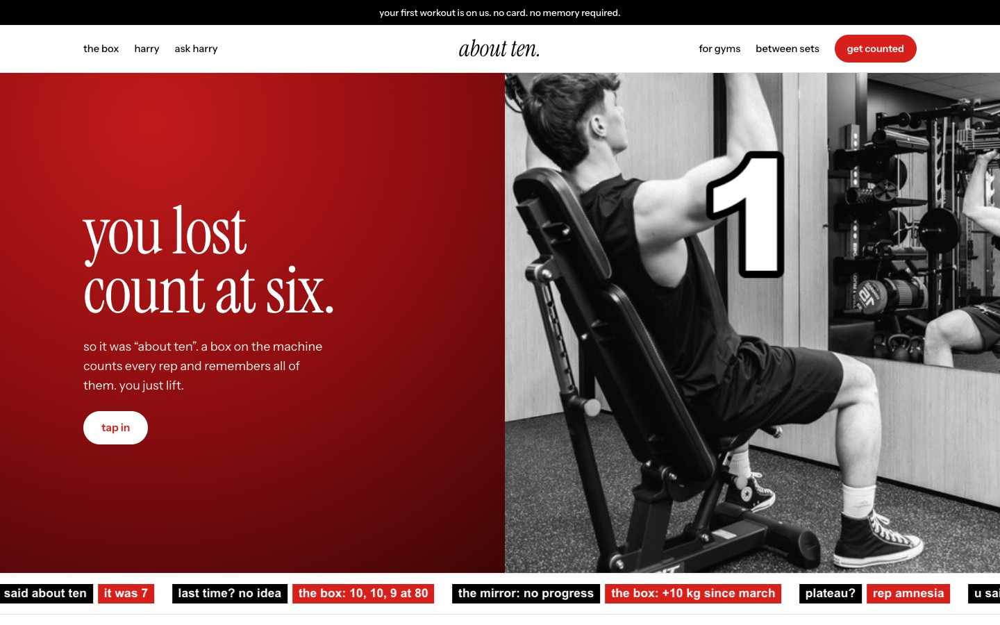
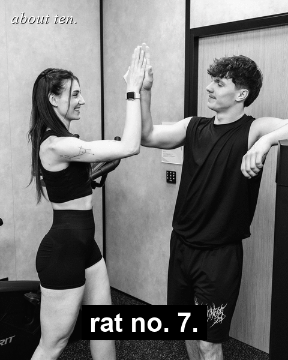
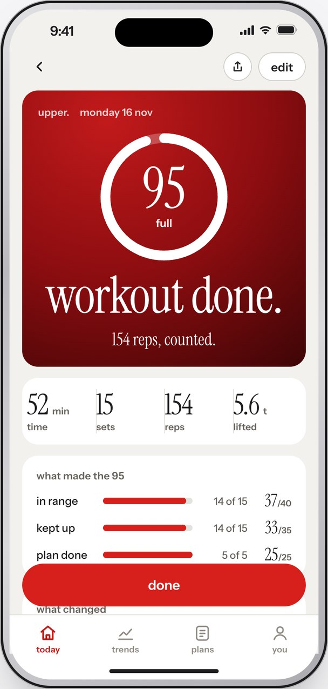
lift like nobody’s counting.

u said about ten.
it was 7.
visualisation | the website
The first screen
The line on red, a GIF with its strips, one white button. Then the ticker of guesses and counts, the box, three steps, what it counts, the app, the math, the rats.
about ten., website
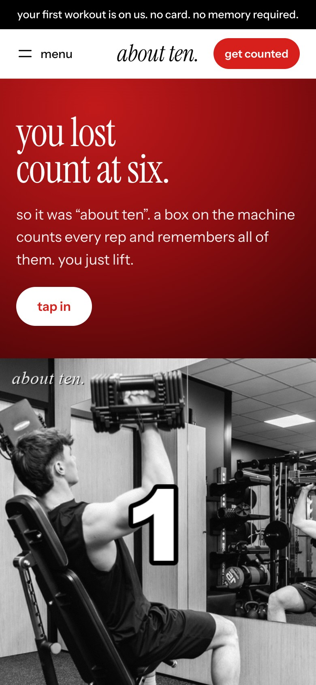
visualisation | the app
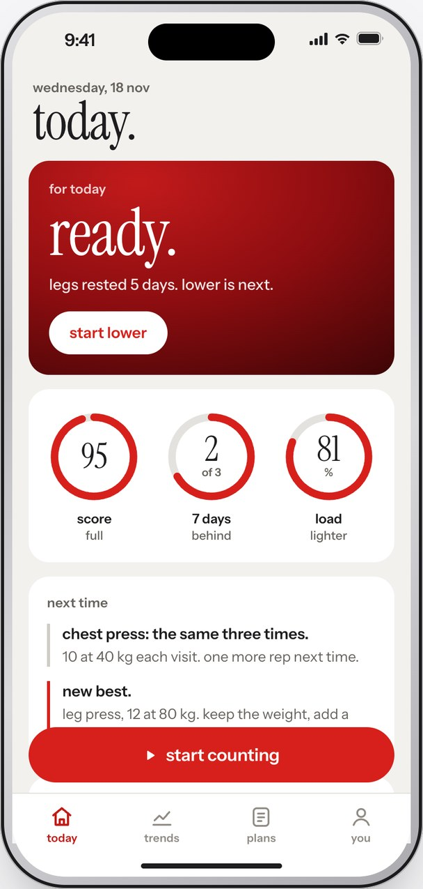

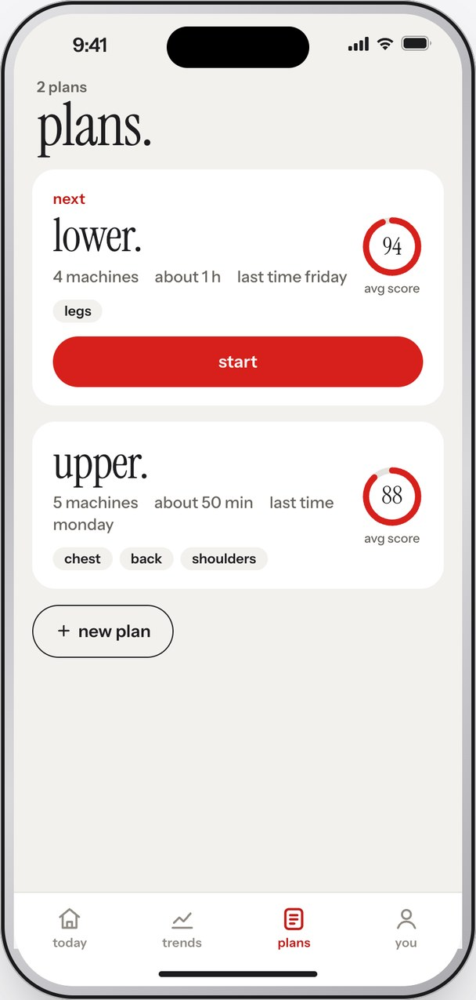
visualisation | posts
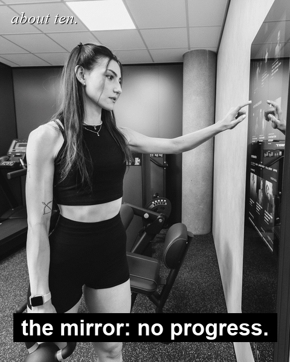

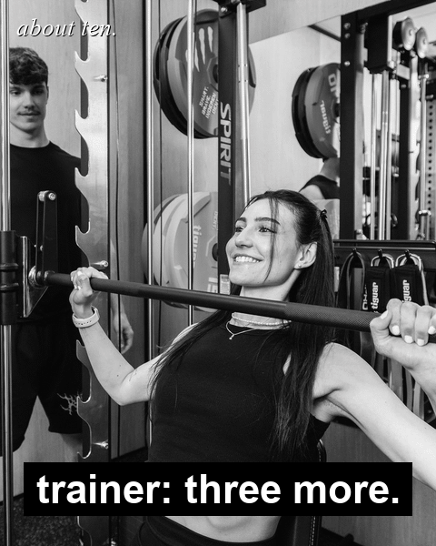

The posts are the GIFs: one gym moment each, the guess in black, the count in red. Captions lowercase, one line, one emoji at most.
visualisation | in the gym and the inbox
 Machine poster, A3Tap sticker, 60 mm
Machine poster, A3Tap sticker, 60 mm Gym TV loop, 16:9
Gym TV loop, 16:9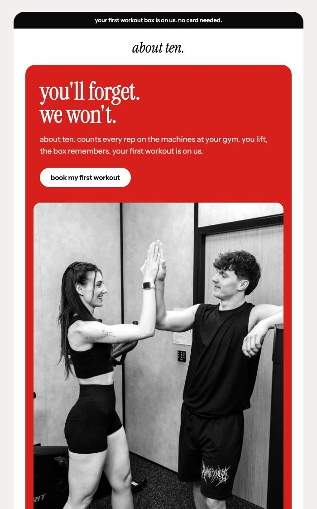
Welcome e-mail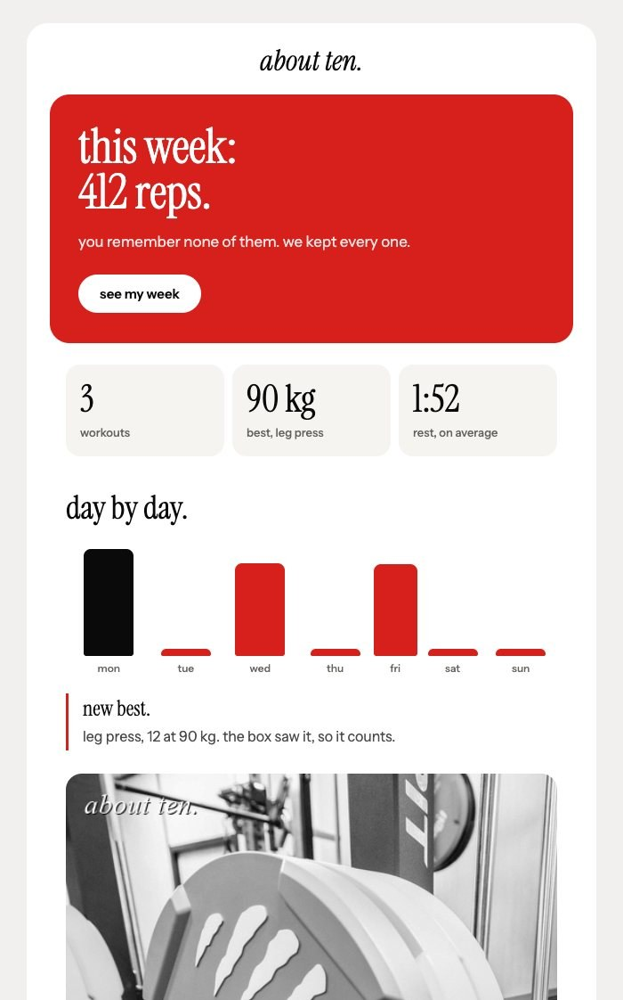
Every Monday